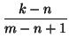
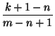

Next: Choosing `with probability p'
Up: Applications of Random Numbers
Previous: Generating Random Reals
Contents
Index
Generating Random Integers
Suppose we want to generate a random stream of integers in the range
n,..., m. The function for this is:
irand(n, m) = [n + (m - n + 1)*rand()].
This works because:
- the result is certainly an integer in the range
n,..., m --
note that
rand() < 1.
- To check randomness we just have to be sure that each integer is
equally likely to be chosen at each stage. But k is chosen if
k n
n + (
m -
n + 1)*rand() <
k + 1,
i.e.

rand() < .
If you feel energetic you can also prove that the output of
irand(n, m) has `higher order randomness' in the sense that,
for example, all pairs (i, j) with
ni, jm are equally
likely to be chosen.
Next: Choosing `with probability p'
Up: Applications of Random Numbers
Previous: Generating Random Reals
Contents
Index
Ian Craw
2001-04-27